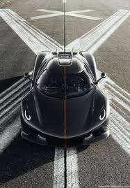

Koenigsegg
A Koenigsegg é uma montadora sueca de supercarros de alta performance, fundada em 1994 por Christian von Koenigsegg.
requisitos para comprar um Koenigsegg
requisitos necessarios
Encontre um revendedor autorizado
Verifique se é concessionária oficial da Koenigsegg.
Veja avaliações e classificações on-line.
Entre em contato para tirar dúvidas.
Trabalhe com um especialista Koenigsegg
Peça orientação personalizada sobre modelos, estilo de vida e orçamento.
Solicite um test drive
Experimente o carro para avaliar o desempenho e conforto.
Alguns modelos podem vir diretamente da fábrica.
Faça uma reserva
Garanta sua vaga com antecedência, pois os modelos esgotam rápido.
Exige pagamento de um depósito inicial.
Assine o contrato de venda
Revise todos os detalhes e obrigações financeiras antes de assinar.
Envie o depósito
Normalmente, cerca de 20% do valor total do carro.
Garante sua vaga e início do processo de compra.
Finalize a compra
Conclua a documentação, pagamento e impostos.
Retire seu Koenigsegg novo.
Curiosidades sobre a Koenigsegg
Algumas curiosidades sobre a fabricante sueca de hipercarros mais inovadora do mundo.
🧬 Material Exclusivo
A Koenigsegg utiliza um material chamado Carbotitanium, uma mistura de carbono e titânio que garante leveza e resistência excepcionais.
⚙️ Tecnologia Freevalve
Seu sistema de válvulas Freevalve elimina o comando tradicional, melhorando o desempenho e a eficiência do motor.
🚗 Produção Limitada
A marca fabrica apenas algumas dezenas de carros por ano, com produção totalmente personalizada e exclusiva.
✈️ Fábrica em Base Aérea
A sede da Koenigsegg fica em uma antiga base aérea em Ängelholm, Suécia — onde a pista ainda é usada para testar os hipercarros.